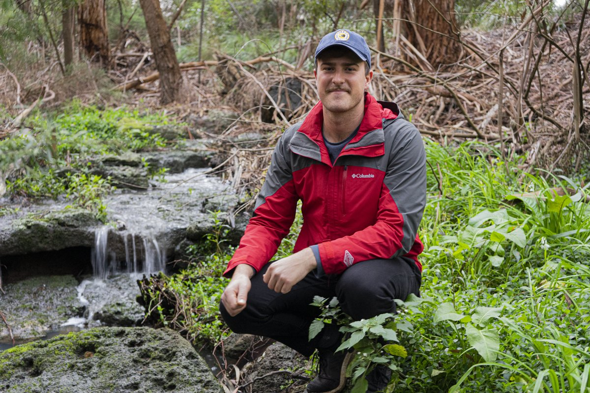
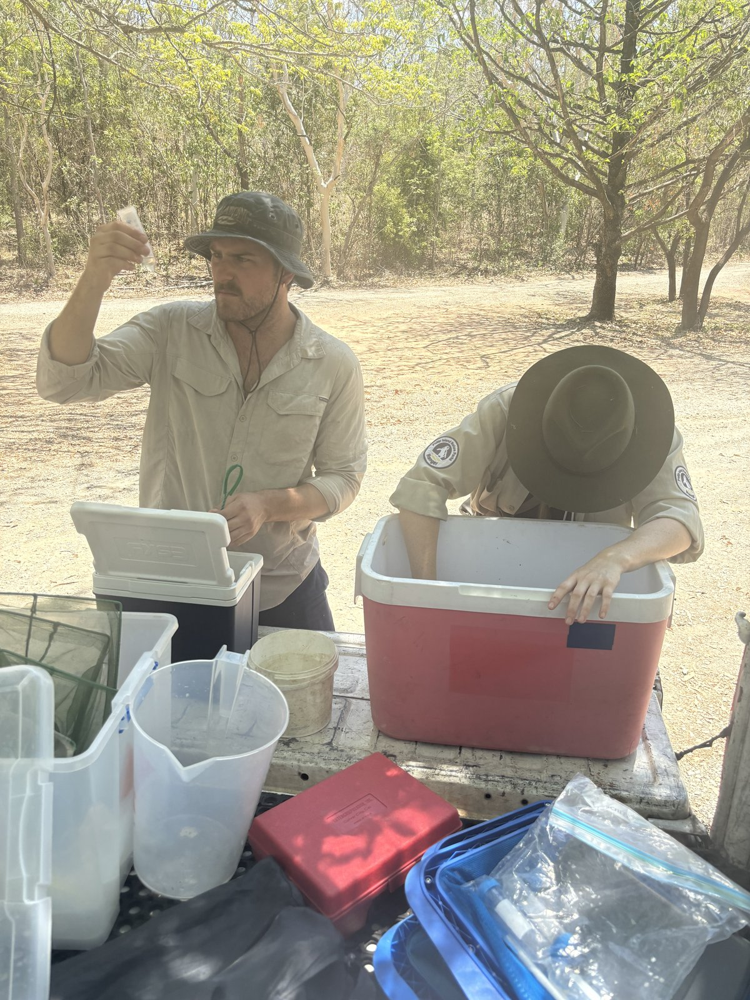
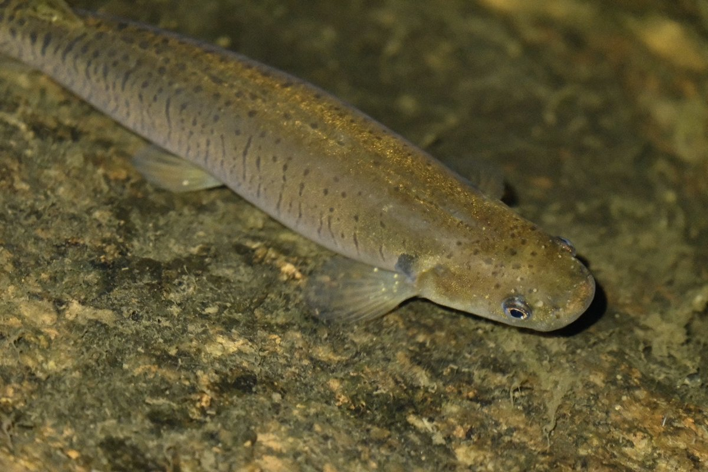
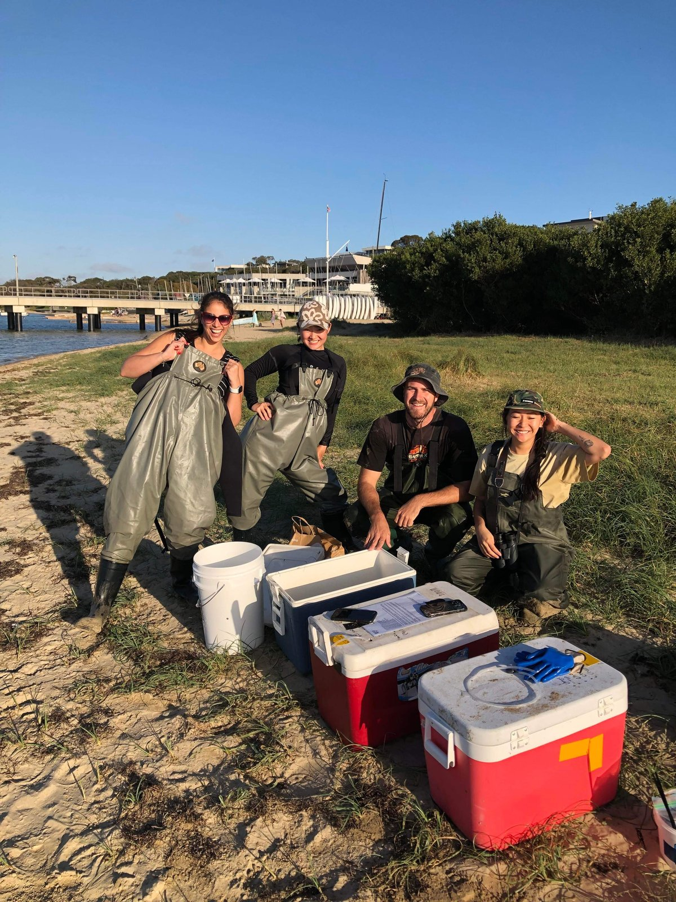
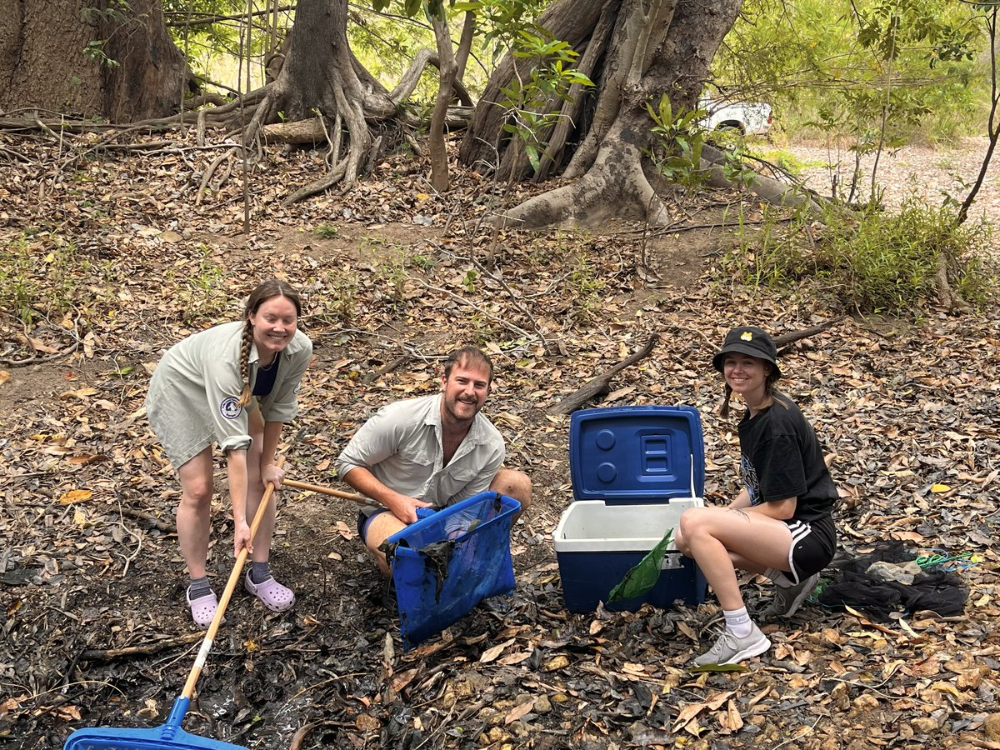

Behavioural Ecology & Ecotoxicology
PhD Candidate · Monash University · Melbourne, Australia
I study how anthropogenic disturbances—from pharmaceutical pollutants to noise—reshape the behaviour, cognition, and social dynamics of aquatic animals. My work bridges controlled experimental biology with transparent, reproducible data science.

Early-career researcher passionate about conservation and the natural world
I am an early-career researcher in behavioural ecology and ecotoxicology at Monash University, where I am completing my PhD under the supervision of Prof. Bob Wong, Asst. Prof. Michael Bertram, and Dr. Jake Martin. My research sits at the intersection of animal behaviour, cognitive ecology, and environmental toxicology, asking how the chemicals we release into waterways alter the way aquatic animals think, interact, and survive.
My PhD investigates whether common psychoactive pharmaceutical pollutants—such as the benzodiazepine temazepam and the antidepressant amitriptyline—disrupt cognition, collective behaviour, and social information transfer in fish. Using the guppy (Poecilia reticulata) as a model, I combine behavioural assays, video tracking, and rigorous statistical analysis to reveal how contaminants detected in waterways worldwide may undermine processes critical for survival.
Prior to my PhD, my honours research demonstrated that anthropogenic boat noise alters individual behaviours in a fish–shrimp mutualistic relationship. I am deeply committed to open science: I develop and maintain public analytical tools, including the R package cleanRfish, and I contribute to the scientific community as a Data Editor for Proceedings of the Royal Society B.
I am motivated by a desire to generate research that informs conservation policy, particularly around the regulation of emerging contaminants in aquatic ecosystems. I thrive in collaborative, close-knit teams and thoroughly enjoy communicating science to diverse audiences.
Behavioural ecology, ecotoxicology, pharmaceutical pollution, collective behaviour, cognition, social information transfer, aquatic conservation
School of Biological Sciences
Monash University
Melbourne, Australia
R, Python, GitHub, EthoVision, idtracker.ai, video tracking, experimental design, open science
Investigating how anthropogenic disturbances reshape behaviour and cognition in aquatic animals
Investigating how the benzodiazepine temazepam disrupts shoaling dynamics, collective motion, and local interaction rules in guppies. Exposure alters alignment, cohesion, and velocity in a dose- and phenotype-dependent manner, revealing that group composition modulates vulnerability to contamination.
In preparationTesting whether the antidepressant amitriptyline impairs spatial learning in wild-caught guppies. Using repeated-trial maze assays, I found sex-specific cognitive impairment: exposed males make significantly more navigational errors, while female learning remains unaffected.
Published — ES&TExamining whether amitriptyline disrupts socially transmitted antipredator responses (fear contagion) in guppies. Exposed observers show impaired behavioural coupling with demonstrators and slower recovery dynamics when relying solely on social information.
Current focus — In preparationAn upcoming study assessing whether invasive guppies can eavesdrop on antipredator cues from native Australian rainbowfish, and whether pharmaceutical pollutants disrupt this cross-species social learning—with implications for invasion ecology and conservation.
In planningFrom tropical streams to temperate marine habitats




Peer-reviewed journal articles
Open-source tools for the research community
cleanRfishAn R package for reconstructing fragmented animal tracking trajectories from video-based tracking systems like EthoVision and idtracker.ai. Uses bidirectional, uncertainty-weighted spline propagation with Ornstein–Uhlenbeck modelling to detect anomalies, identify reliable anchor segments, and iteratively reconstruct complete paths while enforcing biological plausibility constraints.
View on GitHubContributing to the scientific community
Proceedings of the Royal Society B
Ensuring data integrity and reproducibility for one of the world's leading biological journals.
Teaching Associate at Monash University for BIO3052 (Animal Behaviour) and BMS1021 (Cells, Tissues, and Organisms), 2023–2026.
School of Biological Sciences Sustainability Representative, Monash University, 2024–2025. Postgraduate Committee Representative, 2023.
Monash University
The impact of psychoactive pharmaceutical pollutants on cognition and social behaviour in fish
Monash University
Effects of boat noise on risk perception and communication in a fish–shrimp mutualism
Monash University
Zoology Major · Biomedicine Major · Chemistry Minor
Ecological Society of Australia — 2 rounds ($8,500 AUD each)
Australian Evolution Society
International Society for Behavioural Ecology (ISBE)
Society of Environmental Toxicology and Chemistry (SETAC Australasia)
Australian Society for the Study of Animal Behaviour (ASSAB)
I'm always happy to chat about research, collaboration, or science communication
Whether you're interested in behavioural ecotoxicology, have questions about my R package, or want to discuss potential collaboration, feel free to reach out.
School of Biological Sciences
Monash University
Clayton Campus
Melbourne, Victoria 3800
Australia